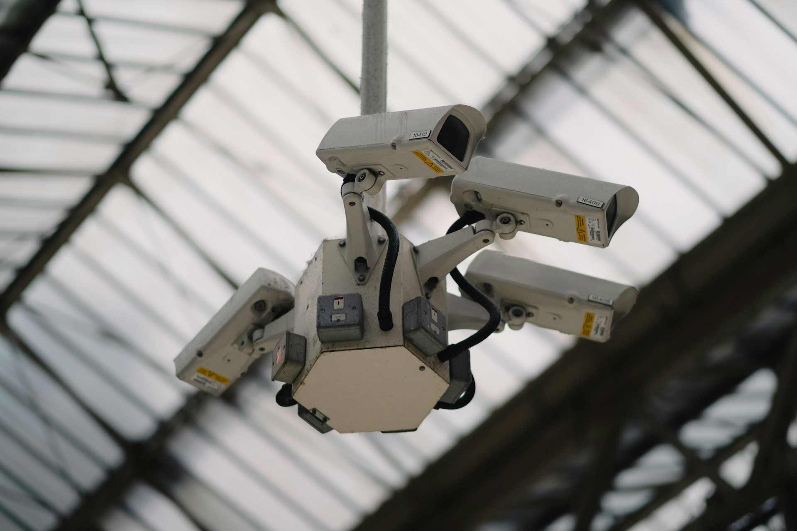

Blog / Security
Security Systems for Businesses: More Than Just Cameras
Published April 2026 · OTR Cable Construction · Veteran-owned business

When people hear “security system,” they picture cameras on a wall. Modern commercial security is broader: it is an ecosystem of video, identity, physical barriers, alarms, and network infrastructure working together—with policies and training behind it.
The evolution of commercial security
Today’s deployments commonly blend:
- CCTV / video with purposeful coverage, retention, and cyber-hardening
- Access control for who can enter which spaces, and when
- Intrusion detection for after-hours perimeter and interior zones
- Remote monitoring and mobile visibility for managers and security staff
Explore our dedicated security systems page for how we approach design and integration, and see how services fit together on our services overview.
Why integrated beats “cameras only”
Standalone cameras can document an event after the fact. Integrated platforms improve response time: door forced + camera clip + access log correlation, push notifications to the right people, and playbooks for escalation.
Access control is a force multiplier
Replacing traditional keys with cards, mobile credentials, or biometrics gives you audit trails, role-based permissions, and instant revocation when someone leaves. Pairing access with video (subject to policy and privacy rules) is where many organizations see the biggest operational win.
Common mistakes we see in the field
- Cameras placed for price, not coverage and lighting reality
- Security VLANs and patch panels treated as an afterthought—see our structured cabling practice for the foundation
- Outdated firmware and default passwords left in place
Final thoughts
Security is visibility, control, and defensible processes—not a SKU count. Design for outcomes: deterrence, detection, delay, and documentation.
Looking to upgrade your security platform?
We design and install integrated commercial security tailored to your facility and compliance needs.
Request a security consultation